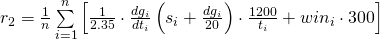
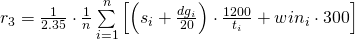
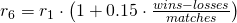
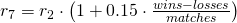

Здравствуйте, представители эксплуатируемого класса!
В среду, 25 января 2017 года, возникла жаркая дискуссия по поводу адекватности подсчитывания рейтинга цтф-игроков. Основной вывод из этой дискуссии - надо поправить формулу или оставить ее как есть.
Напомню, что рейтинг игрока считается как средний рейтинг за матчи. Рейтинг за матч высчитывается по определенной формуле.
Предлагаемые формулы вычисления рейтинг игрока за матч обозначены номерами:

- 
- 
- Количество побед в процентном соотношении
- Только по очкам (с учетом timefactor)
- 
- 
Если Вы считаете, что мне надо еще формулы для рассмотрения добавить - дайте мне знать.
Ниже приведены рейтинги игроков подсчитанные по разным формулам. Сами формулы (точнее их номера) можно выбирать с помощью выпадающего списка
Для удобства сравнения можете
- добавить еще таблицы с помощью кнопки рядом
- кликнуть на строку с игроком, чтобы он высвечивался во всех таблицах
Спасибо за внимание,
eugene